函数是数学中的核心概念,符号计算中许多数值问题都可以归结到函数求值上,因此一个友好的计算机代数系统应该提供大部分基本数学函数的计算方法.如果对精度要求不是太高,譬如说机器精度时,可以利用直接查表并结合函数的多项式逼近,有理分式(Pade)逼近或者将函数转化为数值积分等方法来计算函数值,这些都是数值计算中的重要技术.在这里我们主要讨论的是如何将函数值计算到任意精度,总的来看,与数学常数的情形类似,计算的方法大致分为级数法和迭代法两类,关于它们更多更详尽的讨论可以在Borwein的书[1]中找到.
 幂函数
幂函数
正整数幂在基础数论算法中有详细的讨论,实用中一般采用简单的基于的二分法,有理数幂归结到开方计算,更一般的幂函数 则利用恒等式归结到对数函数与指数函数的计算,因此接下来主要讨论的是开方.
则利用恒等式归结到对数函数与指数函数的计算,因此接下来主要讨论的是开方.
迭代法
计算开方最有效的方法是Newton迭代法,设, 是
是 的一个近似根且,那么迭代公式为其中特别地,当时迭代公式化为每迭代一次只需要做一次除法.有时候为了避免除法也可以先求倒数的开方,设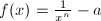,对应的迭代公式为最后再利用也可以求出.特别地,当时迭代公式化为最后一步只需要计算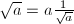.
的一个近似根且,那么迭代公式为其中特别地,当时迭代公式化为每迭代一次只需要做一次除法.有时候为了避免除法也可以先求倒数的开方,设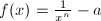,对应的迭代公式为最后再利用也可以求出.特别地,当时迭代公式化为最后一步只需要计算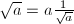.
Newton迭代法是二阶收敛并且自修正的,因此迭代过程中有效精度以2的幂次增长,这样一来,开方时大部分时间都是在计算最后一步迭代中的全精度乘(除)法,巧妙地将最后一步迭代和最后的乘法合成为一步可以加速开方的计算.以为例,设 是倒数第二步迭代后得到的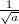的近似值,则
是倒数第二步迭代后得到的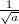的近似值,则 是具有相同精度的近似值,将的迭代公式改写成的形式,用代替
是具有相同精度的近似值,将的迭代公式改写成的形式,用代替 ,代替,迭代一步后得到的就是的全精度近似值.
,代替,迭代一步后得到的就是的全精度近似值.
对于负幂的情形,只需要计算,即 的倒数.设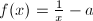,是的一个近似根且,那么对应的Newton迭代公式为其中
的倒数.设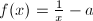,是的一个近似根且,那么对应的Newton迭代公式为其中
数论中常常还会用到整数开方,这时候可以将Newton迭代公式中的除法全部换成整数带余除法.以为例,新的迭代公式为可以证明,如果迭代初始值,那么将单调上升,并且趋向于,因此一般取
最后值得一提的是一种类似于除法而可以借助纸笔计算的开方方法,它可以从方根的最高位开始依次给出各位上的数字.以二进制下的开平方这种最简单的情形为例,设,即 在二进制下共有
在二进制下共有 位,那么在二进制下将有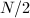位,即第上的数字是1.令,
位,那么在二进制下将有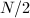位,即第上的数字是1.令, 可以看成的1位近似值,再令,比较与的大小,若,那么的第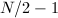位上的数字就是1,否则是0.接下来的每一步都让等于已经求出的近似值,等于近似值最低位的下一位,这样就可以顺次求出各位上的数字.
可以看成的1位近似值,再令,比较与的大小,若,那么的第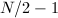位上的数字就是1,否则是0.接下来的每一步都让等于已经求出的近似值,等于近似值最低位的下一位,这样就可以顺次求出各位上的数字.
Newton迭代
从几何的角度来看,方程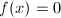的根是曲线与x轴的交点的横坐标,设是根的某个近似值且,过曲线上横坐标为的点引切线,并将该切线与x轴的交点的横坐标作为新的近似值,根据切线方程可以解出 这就是Newton迭代,关于它的收敛性有因此有时也称之为二阶Newton迭代法或者切线法.设那么
这就是Newton迭代,关于它的收敛性有因此有时也称之为二阶Newton迭代法或者切线法.设那么 对应的Newton迭代公式为它是三阶收敛的,比对应的原始Newton迭代公式要快,使用这种迭代公式的迭代方法称为Halley迭代法.以开方为例,设,那么对应的Halley迭代公式为
对应的Newton迭代公式为它是三阶收敛的,比对应的原始Newton迭代公式要快,使用这种迭代公式的迭代方法称为Halley迭代法.以开方为例,设,那么对应的Halley迭代公式为
Newton迭代法是数值稳定的,它常常被用来计算反函数的值.如果已知,改写成 的形式,那么对应的迭代公式为这样就可以求出.
实际计算中应该利用迭代公式的自修正性质适当安排中间精度,一般情况下每一步迭代计算时使用的精度可以只是下一步的一半,据此还可以证明如果使用FFT乘法等快速乘法算法,浮点数除法的计算复杂度与乘法相同.
的形式,那么对应的迭代公式为这样就可以求出.
实际计算中应该利用迭代公式的自修正性质适当安排中间精度,一般情况下每一步迭代计算时使用的精度可以只是下一步的一半,据此还可以证明如果使用FFT乘法等快速乘法算法,浮点数除法的计算复杂度与乘法相同.
如果在处引的二次切线或三次切线,相应地可以得到三阶和四阶的Newton迭代法.以三次Newton迭代法为例,二次切线的抛物线方程对应于在处的二阶Taylor近似可以解出利用近似关系可以将迭代公式化为
更高阶的迭代公式可以使用Shroeder方法或Householder方法来系统地构造,以为例,设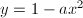,那么Taylor展开式给出了迭代公式序列在介绍AGM迭代曾经提到过 阶迭代公式每迭代一步,有效位数变为原来的倍,如果要求结果的有效位数是
阶迭代公式每迭代一步,有效位数变为原来的倍,如果要求结果的有效位数是 ,总的迭代次数就近似为迭代算法的复杂度在到之间有一个飞跃,而当时不同阶的迭代公式所需迭代次数大致是同一个数量级,因此实用中很少使用超过4阶的迭代公式.
,总的迭代次数就近似为迭代算法的复杂度在到之间有一个飞跃,而当时不同阶的迭代公式所需迭代次数大致是同一个数量级,因此实用中很少使用超过4阶的迭代公式.
对数函数
一般的对数函数可以利用恒等式归结到自然对数的计算,因此接下来所说的对数函数特指自然对数.在实际计算前可以利用一些函数关系,譬如说 这样一来可以大大加快级数的收敛速度.
级数法
 在
在 处的Taylor展开式为除非很小,否则这个级数的收敛速度相当慢,只适用于较低精度的计算.由1,$$" class="latex-display" width="580" height="35">也可以得到的有理分式级数展开可以采用Taylor级数的矩形求和方法或超几何级数的折半求和方法来计算这些级数.
处的Taylor展开式为除非很小,否则这个级数的收敛速度相当慢,只适用于较低精度的计算.由1,$$" class="latex-display" width="580" height="35">也可以得到的有理分式级数展开可以采用Taylor级数的矩形求和方法或超几何级数的折半求和方法来计算这些级数.
迭代法
计算更正式与更快的方法总是基于迭代的,如果有快速计算的方法,那么可以利用反函数关系使用Newton迭代来计算.二阶和三阶的Newton迭代公式分别是 迭代过程中主要计算量在上,因此常常选择更快的三阶迭代公式,迭代的初始值取为的近似值.
计算对数常数时曾经用到过代数几何平均值(AGM)迭代,记
可以看出实际上就是.那么
取作为的近似值,依然借用计算 时的迭代结构,那么在计算的同时就可以计算出,进而可以计算出,这样就得到了计算的一个二阶收敛的迭代算法.这个算法用于计算时更常用的形式是以渐进关系给出的,当很大时,譬如说,其中为需要计算的精度,渐进关系中的分子可以直接用1来代替,即实际计算中根据精度要求可以利用函数关系
时的迭代结构,那么在计算的同时就可以计算出,进而可以计算出,这样就得到了计算的一个二阶收敛的迭代算法.这个算法用于计算时更常用的形式是以渐进关系给出的,当很大时,譬如说,其中为需要计算的精度,渐进关系中的分子可以直接用1来代替,即实际计算中根据精度要求可以利用函数关系
 扩大以满足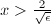{2\over\sqrt{\epsilon}}$" class="latex-inline" style="vertical-align: -9px" width="51" height="24">的近似条件.
扩大以满足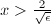{2\over\sqrt{\epsilon}}$" class="latex-inline" style="vertical-align: -9px" width="51" height="24">的近似条件.
指数函数
与对数函数类似,一般的指数函数可以利用恒等式归结到的计算,因此接下来可以只讨论.在实际计算前可以利用一些函数关系缩小,譬如说
使用第二个函数关系将产生更小的截断误差.
级数法
和计算自然对数底一样,可以直接利用的Taylor展开式取作为的近似值.除此之外,定义它的闭形式表达式为则是的有理分式级数展开.多项式逼近与有理分式逼近的误差估计分别为 类似的,也可以采用Taylor级数的矩形求和方法或超几何级数的折半求和方法来计算这些级数.
迭代法
没有很好的AGM迭代公式,如果有快速计算自然对数的方法,那么可以利用反函数关系使用Newton迭代法来计算.其中二阶的Newton迭代公式为三阶的Halley迭代公式为进一步地,设,那么Taylor展开式给出了迭代公式序列实际计算中迭代公式的最佳阶数取决于自然对数的计算速度.
矩形求和
截断后的Taylor级数一般形式为其中常常可以表示成 的有理函数,因此可以事先写出的通项公式.如果
的有理函数,因此可以事先写出的通项公式.如果 不是很大,可以直接把它看成次多项式来求值,例如使用类似于Horner法则的这个法则更常用的形式可以表示成如下算法.
不是很大,可以直接把它看成次多项式来求值,例如使用类似于Horner法则的这个法则更常用的形式可以表示成如下算法.
 .
. 到,顺次计算,,若
到,顺次计算,,若 达到指定精度,终止循环.
达到指定精度,终止循环. .次短乘法.
.次短乘法.
更好的方法是矩形求和,设,那么多项式可以写成嵌套求和的形式
先使用快速求幂算法计算出及 ,然后再对外层的
,然后再对外层的 次多项式使用Horner法则求值,计算各行时可以利用与之间的函数关系.
次多项式使用Horner法则求值,计算各行时可以利用与之间的函数关系.
如果不计常系数乘法和计算的过程,矩形求和的过程只需要大约次乘法,这是因为它将大量乘以的短乘法转化为大数之间的长乘法,这样就可以充分发挥快速乘法算法的威力.
现在将矩形的长和宽对换,那么多项式可以写成另一种嵌套求和的形式
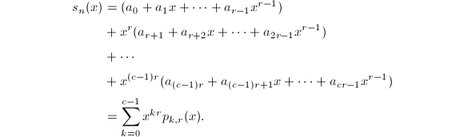
对于特别的Taylor级数,可以表示成仅关于的函数,即以为例,对应的那么其中将 看作关于的有理分式函数利用多项式快速多点求值算法就可以同时求出在处的值,进而可以使用Horner法则计算出事实上大部分初等函数的Taylor级数都满足上面的条件,这种基于多项式快速多点求值的算法的计算复杂度为,其中
看作关于的有理分式函数利用多项式快速多点求值算法就可以同时求出在处的值,进而可以使用Horner法则计算出事实上大部分初等函数的Taylor级数都满足上面的条件,这种基于多项式快速多点求值的算法的计算复杂度为,其中 表示两个位整数相乘的计算复杂度.
表示两个位整数相乘的计算复杂度.
三角函数与反三角函数
从复分析中我们知道所有的初等函数都可以用及其反函数表示出来,因此理论上我们只需要讨论对数函数和指数函数就可以解决所有的初等函数,关于这两个函数的计算已经涵盖了函数求值的主要方法,这里对三角函数与反三角函数的讨论将主要是一些技术性或描述性的内容.
除开具有直接倒数关系的函数,常用的三角函数和反三角函数共有3对,它们之间由简单的函数关系联系着,只需要计算出其中一个函数值就很容易求出其余两个函数值,通常选择三角函数中的和反三角函数中的作为标准函数,这种计算体系对应的函数关系为
一般直接通过Taylor展开式来计算,先利用诱导公式将参数限定到上,然后利用函数关系
缩小,这样可以大大加快级数的收敛速度.
如果使用Taylor展开式来计算,先根据0$$" class="latex-display" width="580" height="34">将参数限定到 上,类似地,也可以利用函数关系缩小以加快级数的收敛速度.除此之外,由于可以通过计算对数函数的快速AGM迭代来计算反正切函数,或者也可以直接据此构造出的迭代算法,AGM迭代的计算复杂度比级数方法低.如果再利用反函数的Newton迭代计算出,就可以在的时间内计算出所有三角函数的位有效数字.[2]
上,类似地,也可以利用函数关系缩小以加快级数的收敛速度.除此之外,由于可以通过计算对数函数的快速AGM迭代来计算反正切函数,或者也可以直接据此构造出的迭代算法,AGM迭代的计算复杂度比级数方法低.如果再利用反函数的Newton迭代计算出,就可以在的时间内计算出所有三角函数的位有效数字.[2]
折半求和的应用
折半求和[3]是用来计算超几何级数在有理点处的值的一项重要技术,大部分初等函数都具有超几何级数的展开式.
指数函数
设求值点,其中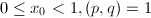.如果 都不是很大,可以直接代入折半求和公式进行计算,否则先将写成的形式,其中.记,则
都不是很大,可以直接代入折半求和公式进行计算,否则先将写成的形式,其中.记,则 的分母是,使用折半求和计算时可以用移位来代替除法,最后再计算就求出了在有理点处的值.
的分母是,使用折半求和计算时可以用移位来代替除法,最后再计算就求出了在有理点处的值.
余弦函数
类似的,先将写成的形式,其中.记,则的分母是,并令
那么
使用折半求和计算 和
和 时可以用移位来代替除法,这样就可以递推地计算出和来.
时可以用移位来代替除法,这样就可以递推地计算出和来.
其他函数
下面给出了一些其他常用初等函数的定义或计算公式.
- 双曲三角函数 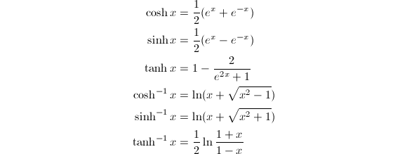
参考文献
[1]Pi and the AGM, Addison-Wesley Longman Publishing Co., Inc., 1987.
[2]Multiple-precision zero-finding methods and the complexity of elementary function evaluation, Analytic Computational Complexity (1975), 151-176.
[3]Computer algebra in the service of mathematical physics and number theory, Computers and Mathematics 09 (1990), 232.